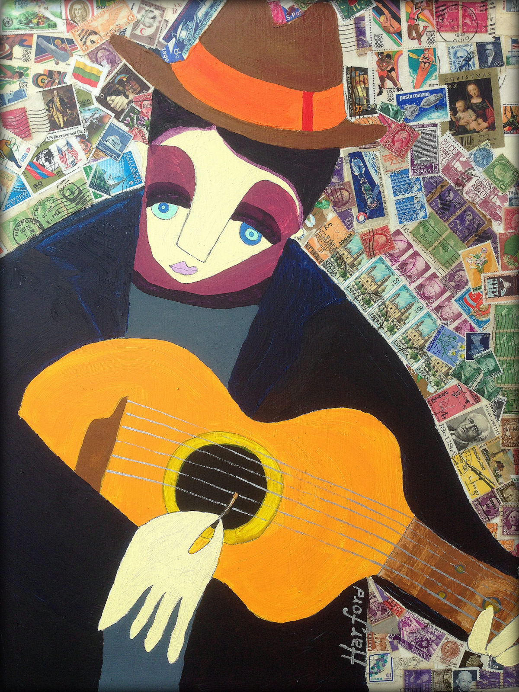
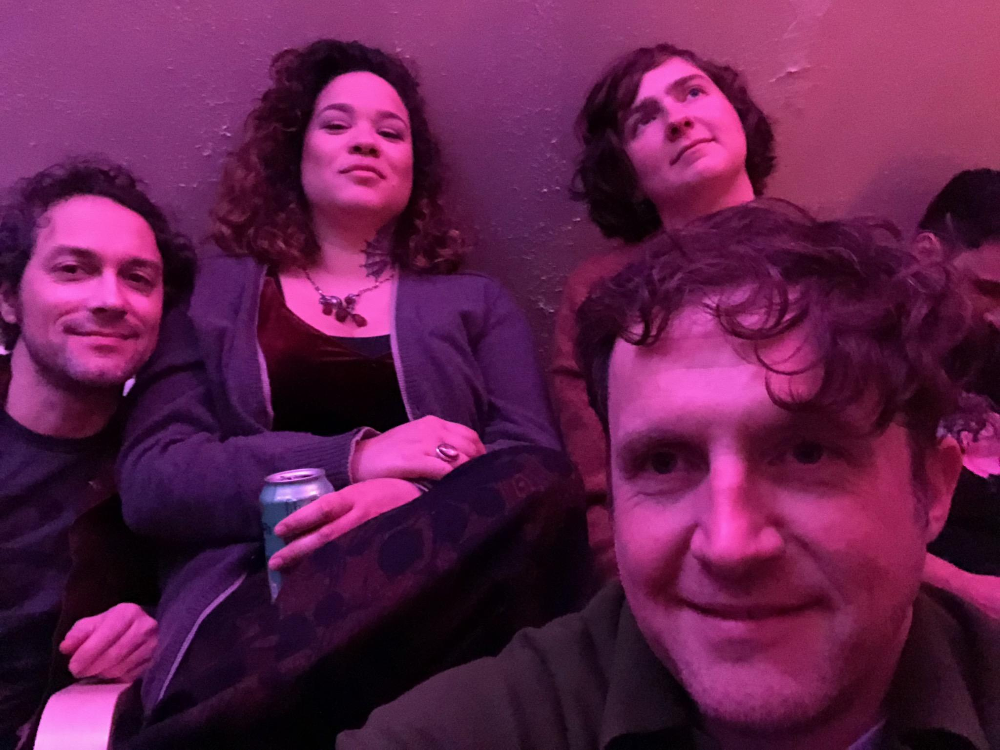

Chris Harford
Monday, March 23rd at 7pm
If you've been in the area for any amount of time, you will likely be familiar with Chris Harford and the Band of Changes. If you are not, it is our pleasure to introduce you to an artist who embodies what Soupçon Salon is all about. Chris Harford has been a prolific painter and musician for decades, and his legend only continues to expand.
All you have to do is listen to some of these songs and you will understand what all the hype is about. Harford's music is surreal and psychedelic, yet amazingly accessible and beautiful. Last November, Band of Changes released Shimmering Waste, a beautiful record showcasing a couple of Daniel Johnson covers, along with some truly inspired collaborations.
"Jezebel Was a Jersey Belle" is a down-tempo creeper oozing with wurlitzer and reverb. The lyrics to this, and two other tracks, were penned by Pulitzer Prize-winning Irish poet, Paul Muldoon. Harford's cover of Townes Van Zandt's "If I Needed You" is among the best I've heard. And these are just some of the songs you can stream from his site. For more proof of his talent, you can explore copious material from his many albums, including 2006's Looking Out for Number 6, produced by longtime friend, Ween guitarist Mickey Melchiondo.
Harford plays with fellow Band of Changes member, Jon Thompson, at Soupçon Salon on Monday, March 23rd. To see the jaw-dropping list of musicians Harford has absorbed into the amorphic Band of Changes, check out his website. Not to be missed!
Guest Chefs, Those Looks

Local indie pop group, Those Looks, will transcribe their vibey ear morsels into tasty dream bites composed to delight the senses.Menu for 3/23
$15 Prix Fixe
All menu options are vegan, or can be prepared vegan. Please specify when you order.
Pan del diaFresh-baked French bread
with dipping oils.
Hearty Split Pea Soup
topped with crispy, smoked shitake bits.
Apple Crisp with homemade whipped cream
Location
Manon
19 North Union Street
Lambertville, NJ 08530
609.397.2929
Soupçon Salon opens its doors at 7pm. Performances are from 8:30 to 9:15 sharp.